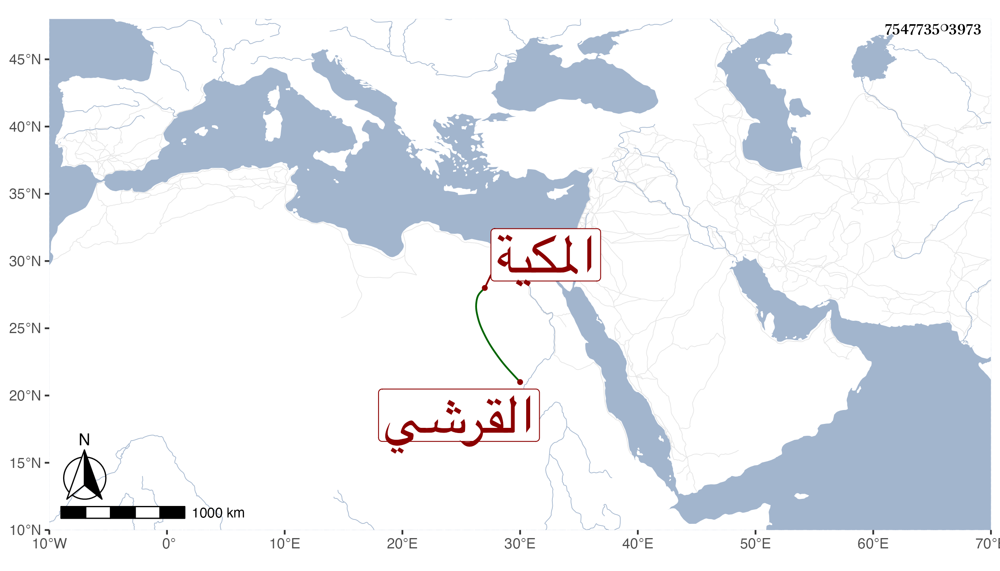

0902Sakhawi.DawLamic.ITO20230111-ara1.EIS1600.754773503973
Biography ID: 754773503973
882
أم الحسين ابنة أبي اليمن محمد بن محمد الطويل بن عبد الكريم بن محمد بن أحمد ابن عطية بن ظهيرة القرشي المكية ، أمها نوبية لأبيها . أجاز لها في سنة ست وثلاثين جماعة .
